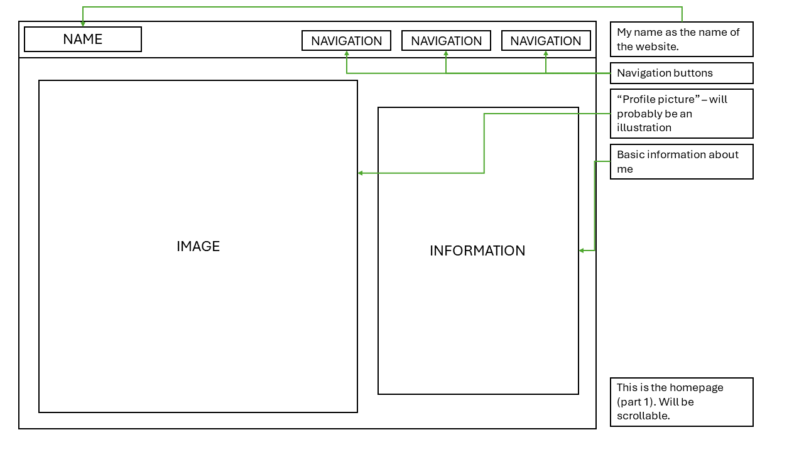
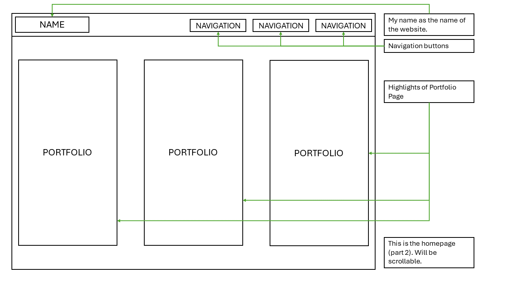
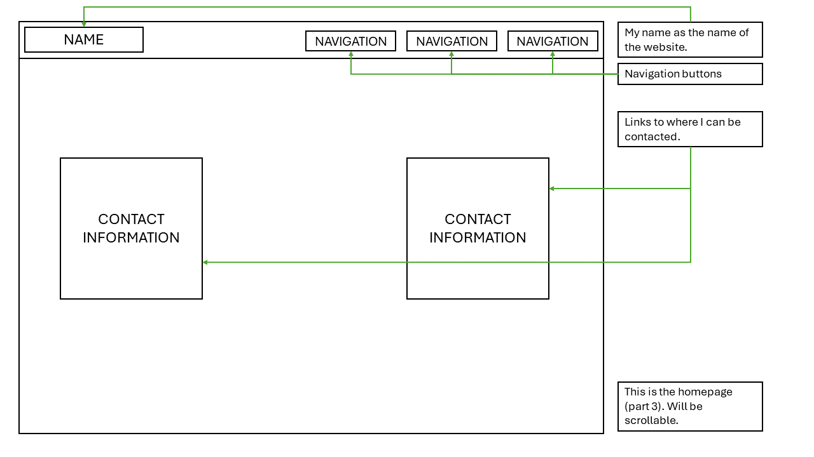
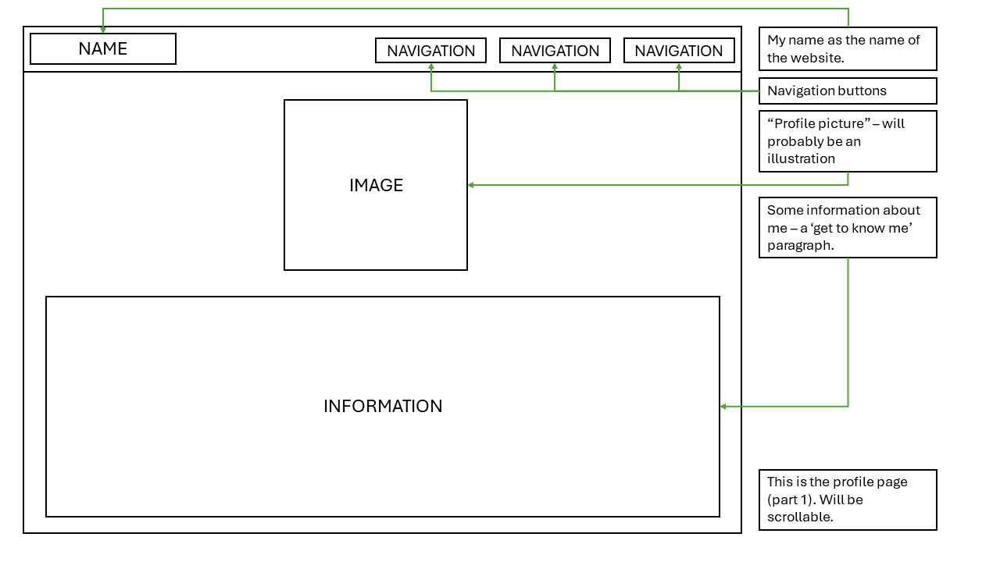
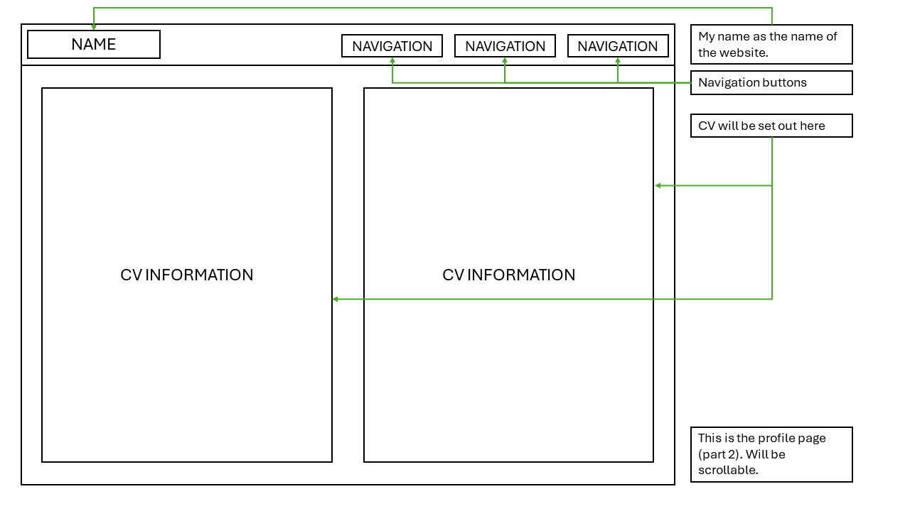
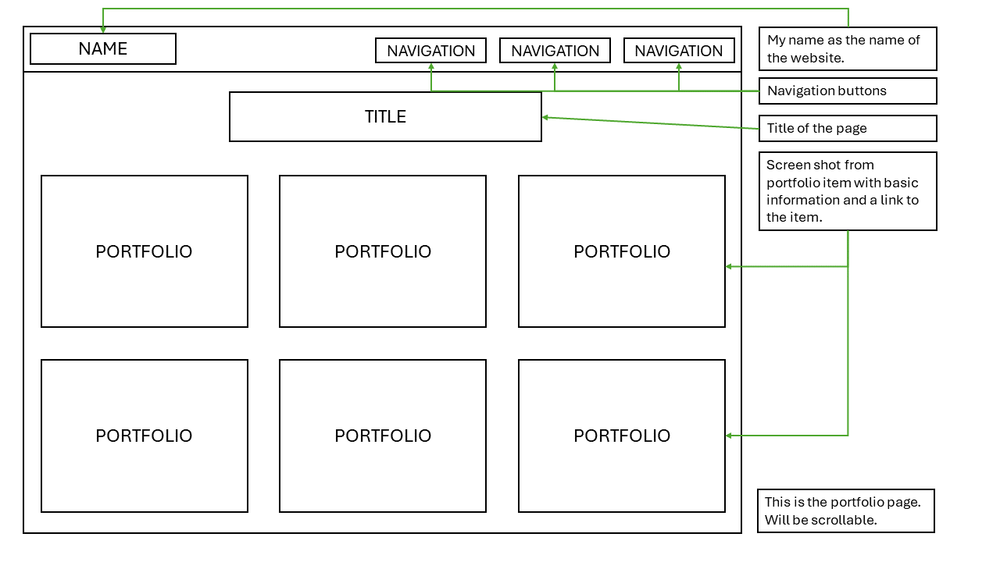
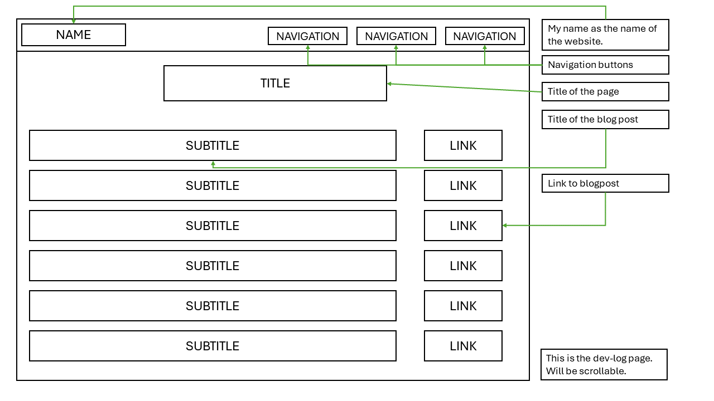
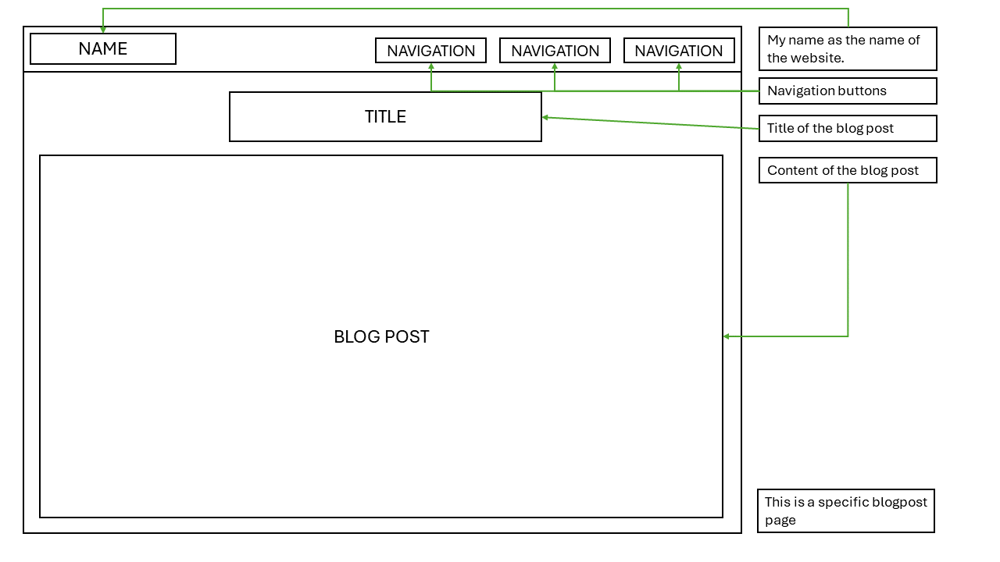

Blogposts
Week 1 Blog Post:
My experience setting up GitHub and publishing to Pages:
I had a rather easy time setting up the GitHub, because this I have done before. It is something I make a point of using when I am making games or doing
anything coding related. Publishing to Pages was a little more daunting. The idea that the website I will be making will be out there for people to see as I do
so is terrifying but also exciting. There was an interestingly proud feeling to know that there is a website I 'made' out there, even if it was literally just a page
that said "this is a test". It is scary, but exciting and I cannot describe the excitement I feel for the rest of the semester where we learn to make this website
into something more tangible.
Reflection on the readings I selected - relating it to my experience with the internet today:
I read a few of the readings, as I find this topic of where the internet came from and where it all started to be extremely interesting. However, the one I
found the most interesting was As We May Think by Vannevar Bush (1945). What he describes is what we are so used to today in the form of the internet.
We have any information we want at the press of a button, we can have more than one piece of information in front of us at the same time, we can make
links between pieces of information, we can record and transcribe information, and we can mass produce information by sending it to someone else. We
have what he was writing about, it just looks a little different from what he envisioned. It is fascinating how something someone thought of more than 80
years ago came to fruition, and is being constantly improved and expanded upon. I have never thought about the internet and the work that went into
getting to where it is today, as much as I have in the past few days as I was thinking about what I read in this reading. We have the privilege of being able to
use what someone else wished and hoped they could.
I went to look what else I could find on the Memex, so I could more clearly understand what he was describing and I found a few short videos. The first one
was more of an explanation of what the Memex was and what then lead to the internet afterwards. Something I learned from this is that the Transistor was a
big player in what came after. It is pretty much where electronics started, which I found to be very interesting, I did not know this. I have honestly never been
this curious about how computers were originally made, and I will probably go back and start looking into it further.
Then I watched two videos on how the Memex might have looked and worked according to the intricate explanation that Bush (1945) gave in the article.
The first one is quite quick and it is a bit harder to see what is going on, but I still think it is an interesting watch. The second one is an animation, as well as a
video of how someone interacts with it. It was like an interactive piece that you can find on the internet and interact with like a game or a simulation (in a
quick search, I could not find it, but the video illustrates in quite nicely).
https://www.youtube.com/watch?v=gbQBGpS06T4
https://www.youtube.com/watch?v=c539cK58ees
Interesting things I have found about the history of the web:
So, I was not sure how to answer this question as I find the internet to be both fascinating and terrifying (not to mention the people who use it, I mean look
at r/place, which i know is just Reddit users but I feel like a lot of internet users are on Reddit, so I think it can be used as somewhat of an illustration of the
people on the internet). So, I literally looked up 'interesting facts about the internet' and found an article on Bluespan (2016) named '20 Interesting Facts
About The Internet.' There were many interesting things but the one that caught my eye was number 10 "87% of people have not heard the term 'Internet of
Things.'" (Bluespan, 2016). I have, in fact, not heard about this, so the rabbit hole began (Okay, it was not a very deep hole, I found a really good article that
explains what it is, why it is used and where it is used, really well).
So, how I understand it, is that the internet of things is a network of things that are all connected and send and receive data to each other and the cloud.
These things usually have certain pieces of technology in them like sensors and software. These things can be a multitude of things from a cellphone,
computer, or car to a heart implant or a biochip. These things share information and act on the information accordingly. It usually does this on its own,
but humans can interact with these devices and the database they are connected to (Gillis, no date).
This is just a little bit on the internet of things, but the article and other articles goes into a lot more depth about these things.
My goals for this course:
My answer might be on the more obvious side. I would like to learn how to build a website and learn more about the internet, as well as learn the different
languages that are being taught. I am very excited about the fact that we are building a portfolio, because for the last few months I have been trying to figure
out how I am going to be doing that. This gives me the opportunity to learn new things as well as make the thing I need and want to make.
References:
Bluespan (2016) 20 Interesting Facts About The Internet. Available at: https://bluespan.com/blog/20-interesting-facts-about-the-internet [Accessed on: 16
February 2024]
Bush, V. (1945). As we may think. The Atlantic Monthly, 176(1), pp 36 - 44.
FionaCharming (2009) As We May Think_Vannevar Bush. Available at: https://www.youtube.com/watch?v=gbQBGpS06T4 [Accessed on: 16 February 2024.]
Gillis, A. S. (no date) internet of things (IoT). Available at: https://www.techtarget.com/iotagenda/definition/Internet-of-Things-IoT [Accessed on: 16
February 2024]
internet-class (2016) What was the memex? Available at: https://www.youtube.com/watch?v=q8s2jkq-R5o [Accessed on: 16 February 2024.]
Mark Sanderson - researcher (2009) Memex animation - Vannevar Bush's diagrams made real. Available at: https://www.youtube.com/watch?v=c539cK58ees
[Accessed on: 16 February 2024.]
Week 2 Blog Post:
Folder Structure and URL Scheme:
I will be honest, I was not sure what was meant by these two things. But after doing some research, I think I have an idea of what these are, and how to
approach them.
Folder Structure:
- Root folder:
- index.html
- profile.html
- blogs.html
- essays.html
- design.html
- portfolio.html
- images folder
- will contain any images used in the website
- styles folder
- will contain all .css files used to style the website
- scripts folder
- will contain all javascript files.
I did some research and found a website (Stein, 2019) explaining a simple folder structure, and what the goal of each file is. This made sense to my
overly busy brain, so I decided to stick to the basics in this sense. I did not want to over complicate things if it was not necessary.
URL scheme:
Again, I was unsure about what this is, but after watching the lecture videos and searching the depths of google, I realised how URL's work in websites, and I
think I understand now. What I did was write a URL for every page that would be on my website. I am unsure if this is what was meant by doing a URL
structure, but that is what I did:
index: https://wits-digital-arts-interactive-media.github.io/WSOA3028A_2615283/index.html/
or https://wits-digital-arts-interactive-media.github.io/WSOA3028A_2615283
profile: https://wits-digital-arts-interactive-media.github.io/WSOA3028A_2615283/profile.html
blogs: https://wits-digital-arts-interactive-media.github.io/WSOA3028A_2615283/blogs.html
essays: https://wits-digital-arts-interactive-media.github.io/WSOA3028A_2615283/essays.html
design: https://wits-digital-arts-interactive-media.github.io/WSOA3028A_2615283/design.html
portfolio: https://wits-digital-arts-interactive-media.github.io/WSOA3028A_2615283/portfolio.html
To me this makes the most sense to use. The user of the website would be able to see where in the website they currently are, and so would I. It makes the
most sense to me to have URL's that show your path exactly, in words that are easily understandable.
Wireframes:
I prefer a more sleek looking website. I am not sure about a colour palette yet, but the following is what I basically imagine things to look like:
       Inspiring Websites:
I was looking for sleek websites that are easy to navigate and interesting to look at. I enjoy more sleek looking websites as they feel professional to me, and
that is something I enjoy looking at and making. I looked at A LOT of websites, but these were the highlights for me:
I really like the colour palette of this one. I also really like the way things slide in as you scroll down to look at the rest of the page.
https://gerlogu.com/I like how alive this website feels. Everywhere you look, every time you scroll and everywhere you hover your mouse, something reacts.
https://www.jackbromhead.com/This one also caught my eye with the colour palette. I, however, do not like that the navigation on the top only takes you to a different place on the same
page.
This one I like because of the sleekness, and because of the colour palette, however, it is not as reactive as I would like. I would like there to be more
reaction as I scroll or hover my mouse. It is also quite busy on a lot of the pages.
Reflecting on the reading:
So, after reading the first 7 pages (again), I picked up some more info that I did not the first time. It seems to me, that Moulthrop starts by relaying the history
of hypertext up until that point.
He talks about how people thought this might have caused a revolution in information synthesis, but it did not do so, per say. I feel like it was more a quiet
thing that emerged over time. But it was a great thing.
He also talks about how hypertext and hypertext systems could have a large social and political effect. He refers to Nelson, who wanted to create this
system and give access to the public, share the knowledge and so. And then, in contrast, he talks about Stoll, who believes that such information should be
kept within certain communities, like scientific communities, and later policing (i think it can be called this) communities. But Moulthrop also mentions that
this has its downsides, as policing communities use the information databases to access private information.
He talks about how we have a simple hypertext system now, but it might and most probably will expand over the next years.
I am aware that the above paragraphs are confusing as all heck, but this is what I got from the first 7 pages, before the McLuhan Law of Media questions
that Moulthrop answers.
To add my two cents, I think that it is important that information (scientific or otherwise) is made available to the normal person. As well as the ability to add
our own musings and opinions. It is dangerous yes, but important. We see this today where people are more educated about topic they are interested in, and
can become educated on important topics that is relevant to present times. Using the internet will always be dangerous. It is filled with people who spread
misinformation or create funky websites with dangerous things on it. This is why we must be careful (in other words, or in the words of Christine wisdom,
don't get scammed... it's been a rough week...). However, the internet can be a wonderful place. I know so much about so many different things, important
and not important.
I get the feeling that a lot of the people that are referenced in this reading also forgets that not all people will access all pieces of information. There just is
not enough time in the world. Everyone will access the parts that interest them, and yes, some will access the dangerous parts. But I do think in a lot of ways,
the internet and hypertext pieces, have more pros then cons.
Moulthorp then analyses hypertext within the context of McLuhan's Law of media questions:
1. What does it enhance or intensify?
- In short, connections. Hypertext enables users to make connections between things that seem to reference each other. This is very clearly seen with
things like Wikipedia where there are words and names that are blue. If yo click on them, it leads you to a different page with more information on it. The
reading also talks about how this can cause paranoia. I can honestly see this happening. Someone feverishly connecting things that might not even
connect all that well, making it an obsession. It puts me in mind of someone with a wall of images and articles all connected by red string.
2. What does Hypertext Displace or Render Obsolete?
- According to this piece, not books. But when I read further, it kind of came accross as if it is replacing books. Or at least printed ones. It is also possibly a
solution to the tv craze. Well, this is what I got from it at least. This is a hard question, because hypertext is definitely making an appearance in literary
works. I have the Assassin's Creed books (by various authors) on my kindle. The books contain various words in Italian, and the kindle enables you to click
on a word that then takes you to the definition at the back of the book. But it is not really replacing the book. I would agree though, that it is reviving
literary work.
3. What does hypertext retrieve that was previously obsolete?
- With this question the text suggests that hypertext might revive the knowledge and importance of typographic literacy. It makes a lot of the harder to
understand texts easier to understand, as concepts that are hard to understand could be linked to an explanation, or could be linked to another piece
that might help a reader understand better what is going on. This could have a positive or negative effect on political and social aspects of life. In my
personal opinion, the pros outweigh the cons. It makes things accessible, for a wider range of people, and means that more people coiuld be better
educated on more topics.
4. What does hypertext become when taken to its limit?
- The text suggests that hypertext might create a whole new form of internet interaction that could have social and political implications. This could be a
good thing, but it also says that we should be careful as institutions might not take this lightly. I am unsure what to do with this. To me, this part is just as
it says. Hypertext could be a wonderful thing, but it could have negative implications as well.
I am not sure if I looked at this text correctly at all. It is quyite a complicated text, and a lot of it went over my head, but this was some of my thoughts and
findings in the reading.
Reflecting on interaction and the www:
The video spoke to my soul. This is a problem I face way too many times in a week, and I am ashamed every time. This made me think a lot about how really
thinking about your design, as well as reiterating on a design, getting feedback, and changing things can help your design be a lot better.
Doors aside, I hope to make my website in such a way that what you can do is intuitive, and not confusing. I do not want people to leave my website feeling
more irritated than they were when they pushed a pull door.
Interaction, or interactivity, to means reactive. When a user does something on a page, there should be a reaction, and there should be some form of
feedback. So, when a user presses a button, it changes to a different page, and the button changes colour, or pulses, or something else. In my opinion this
makes a website, and honestly most other things, much more pleasant to use.
This blog post, is a little all over the place, and when adding it to my website, I will probably be adjusting it a little. My brain is still trying to process a lot of
what was said in the reading and in class.
References:
Moulthrop, S. (1991) "You say you want a revolution? Hypertext and the laws of media". Postmodern Culture. 1(3).
Stein, C. (2019) Basic Website/File Folder Structure. Available at: https://openlab.bmcc.cuny.edu/mmp-240-fall-19-stein/2019/09/05/basic-website-folder-file-structure/
[Accessed on: 19 February 2024]